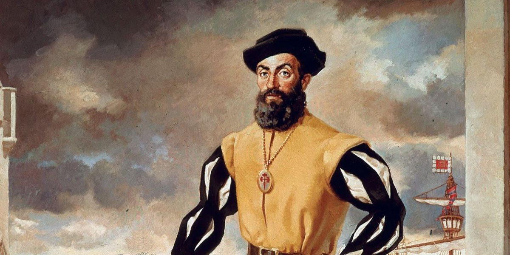
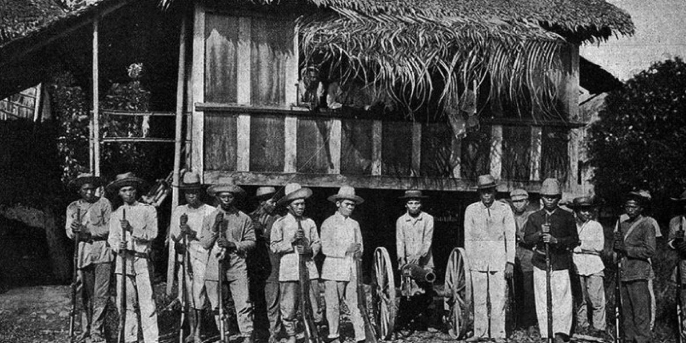

Roots of Philippine Homophobia: Spaniard Colonization

Pre-colonial Philippine society in Luzon and Visayas welcomed homosexuality in open arms, often times elevating homosexuals to certain key positions in their community such as babaylan, the community’s religious leader. Even in the Islamisation of Mindanao where homosexuality was eventually denounced, communities that did not practice Islam accepted homosexuality and gender-bending cultures.
Of course, come March 21, 1521, all that would change.
The colonialization of Spaniards in the land of the Philippines introduced patriarchy to the very fabric of Philippine society – a stain that would still be seen 501 years later. In Spaniard society, men were expected to be masculine and strong while women were expected to be feminine and submissive. Thus, effeminate males along with manly women were shunned and often arrested by the Spanish government.
The power of babaylans were stripped due to this spread of patriarchy. From a position with power on par with that of the datus to a position only capable of relieving the worries of the natives as Spaniards took over, the babaylans eventually faded from Philippine society.
Not without a fight, however. Throughout the 16th to 19th century, several male babaylans led revolts against Spaniard rule such as that of Tapara’s, Ponciano Elofre’s, and Gregorio Lampino’s. The latter two of which were recorded in the late 19th century while the first was recorded in 1663 by a Spanish fray.